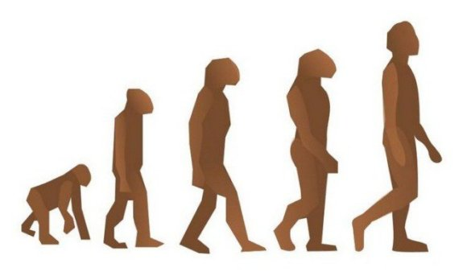
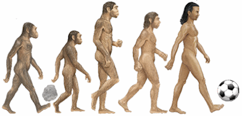
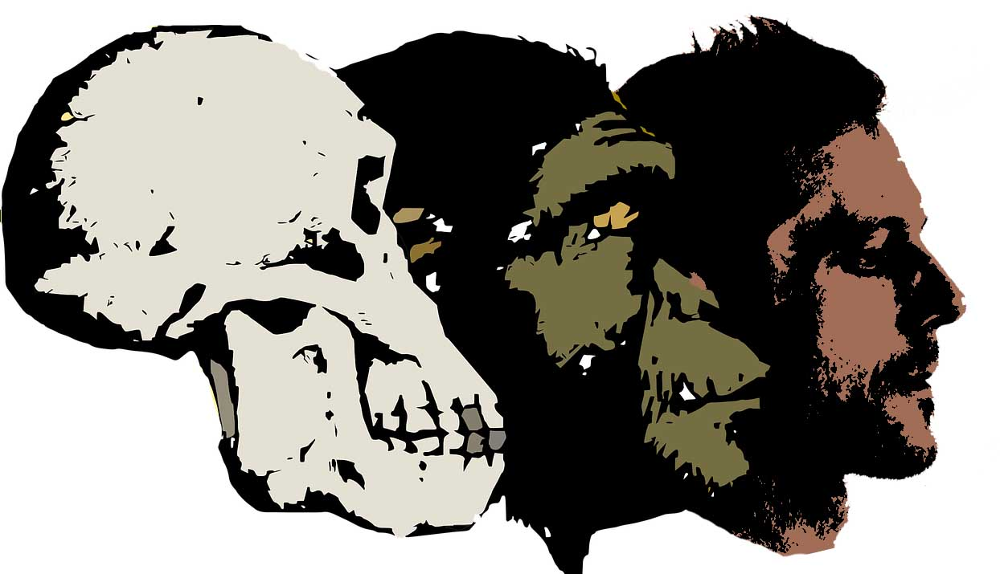
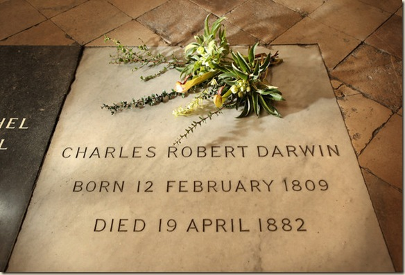

Charles Darwin es conocido por su trabajo como naturalista, él desarrolló una teoría de la evolución para explicar el cambio biológico. Charles Darwin nació en Shrewsbury, Inglaterra, el 12 de febrero de 1809. En 1831, se embarcó en un viaje de cinco años por todo el mundo en el HMS Beagle. Sus estudios de especímenes por todo el mundo le llevaron a formular su teoría de la evolución y sus puntos de vista sobre el proceso de selección natural. En 1859, publicó El origen de las especies. Murió un el 19 de abril de 1882, en Londres.
Teoria de la evolución

La experiencia adquirida por Charles Darwin en el viaje le planteó cuestiones importantes. Otros naturalistas creían que todas las especies o bien fueron hechas al principio del origen del mundo, o se habían creado a lo largo de la historia natural. En cualquiera de los casos, se creía que la especie de permanecía casi la misma a través del tiempo. Sin embargo, Darwin notando las similitudes entre las especies de todo el mundo, junto con variaciones basadas en lugares específicos, lo llevó a creer que habían evolucionado gradualmente a partir de ancestros comunes. Llegó a creer que las especies sobrevivieron a través de un proceso llamado “selección natural”, donde las especies que se adaptan con éxito para satisfacer las necesidades cambiantes de su hábitat natural prosperaron, mientras que los que no pudieron desarrollarse y reproducirse murieron.
Muerte y legado

Después de una vida de investigación devota, Charles Darwin murió en su casa de familia, Down House, en Londres, el 19 de abril de 1882, y fue enterrado en la Abadía de Westminster. Durante el siglo siguiente, los estudios de ADN revelaron evidencia de su teoría de la evolución, a pesar de la controversia que rodea su conflicto con el Creacionismo-el punto de vista religioso que toda la naturaleza nació de Dios, que aún abunda hoy en día.